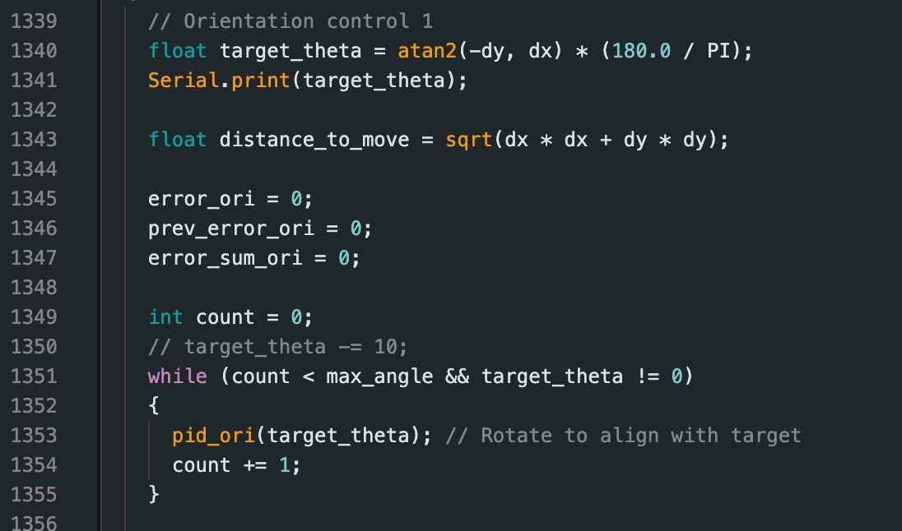
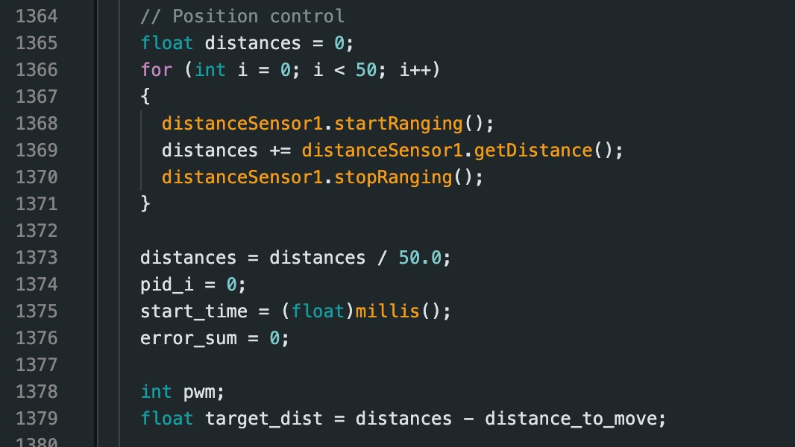
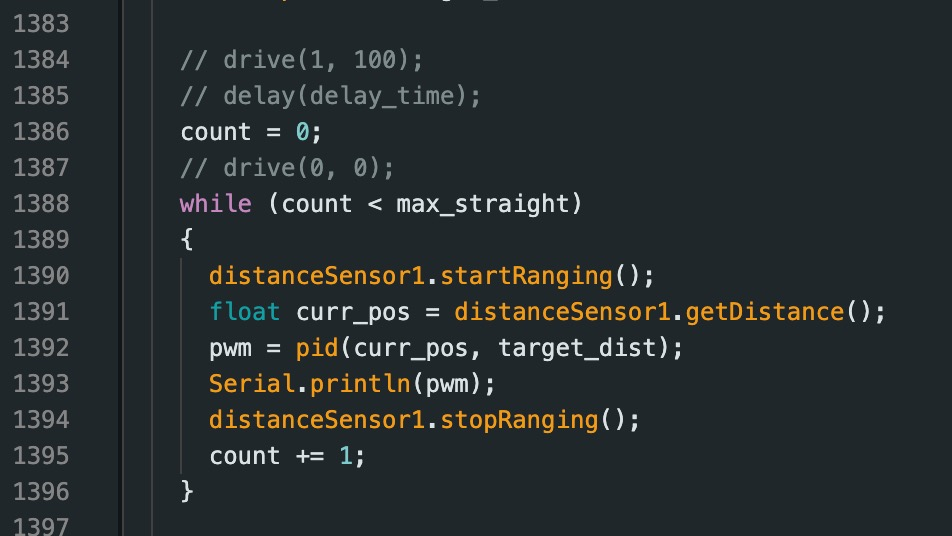
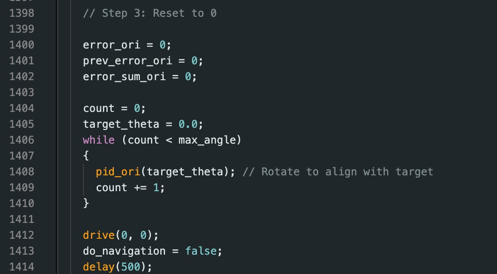
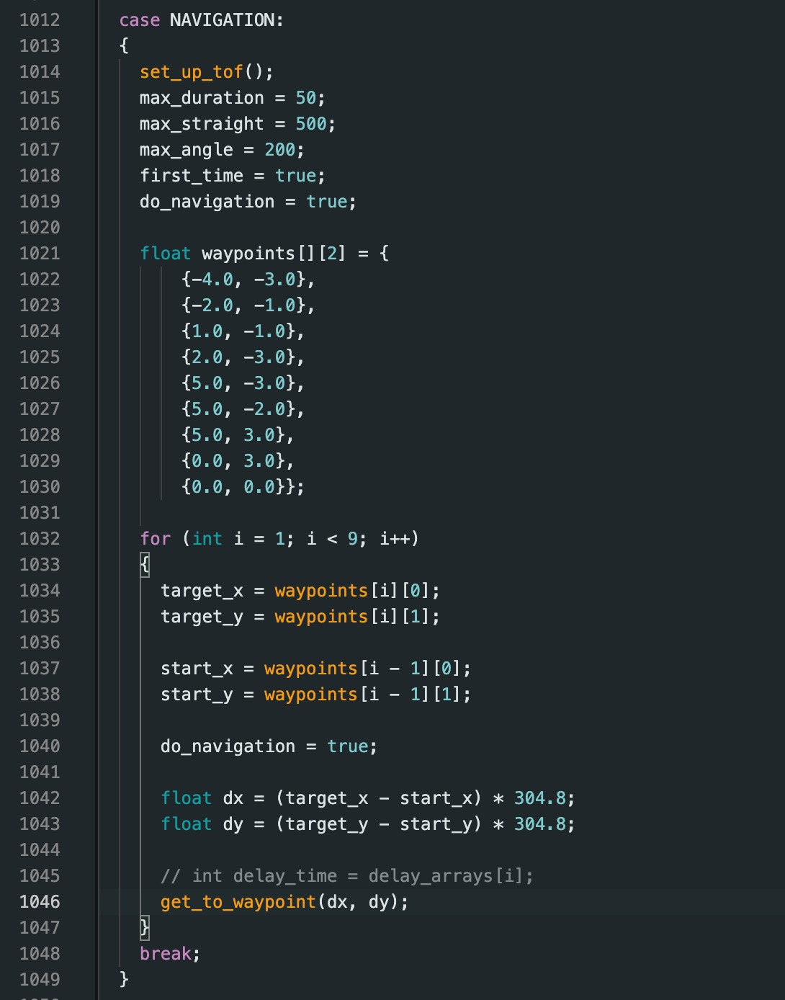

Lab 12: Planning and Execution
04.29.2025 - 05.14.2025
I worked in a group with Sana Chawla, Jennie Redrovan.
Approach
Our approach to navigating through the map was to use PID orientation and linear PID. I decided not to do localization because of my inconsistent results in the localization lab. To make up for the lack of localization, I instead created a method that takes in starting coordinates and ending coordinates. It calculates the angle it needs to face, and then uses orientation PID to reach that angle. Then, it takes the ToF sensor reading before proceeding to go forwards however much it needs to reach the next point.
PID Use
Below, you can see the navigate method I created to implement this functionality.
void navigate(int x1, int y1, int x2, int y2)
{
// variables for pid_ori
pid_ori_i = 0;
start_time = (float)millis();
pid_ori_error_threshold = 5;
error_ori = 0;
prev_error_ori = 0;
error_sum_ori = 0;
current_angle = 0;
while ((float)millis() - start_time < 2000)
{
Serial.println("taking dmp vals");
pid_ori(180);
}
// find what angle to face
float dx = (x1 - x2) * 304.8;
float dy = (y2 - y1) * 304.8;
float target_angle = atan2(-dy, -dx) * 180.0 / M_PI;
// turn to angle
do
{
pid_ori(target_angle);
Serial.print("target angle: ");
Serial.println(target_angle);
delay(10);
} while (!(abs(error_ori) < pid_ori_error_threshold));
drive(0, 0);
delay(100);
// drive forwards using pid
bool move_forwards = true;
int pwm_nav;
// float kf_speed = 0; // Initial speed guess
// float kf_distance; // Will be initialized with first measurement
// pid vars
error_sum = 0;
previous_error = 0;
tof_front.startRanging();
// get initial tof measurements
while (!tof_front.checkForDataReady())
{
Serial.println("tof1 not ready");
delay(10);
}
float current_distance;
for (int k = 0; k < 10; k++)
{
current_distance += tof_front.getDistance();
}
current_distance /= 10;
// kf_distance = current_distance;
float target_distance = max(0.0, current_distance - sqrt(dx * dx + dy * dy));
Serial.print("current distance: ");
Serial.print(current_distance);
Serial.print(", target distance: ");
Serial.println(target_distance);
// move forwards with pid
while (move_forwards)
{
if (tof_front.checkForDataReady())
{
current_distance = tof_front.getDistance();
Serial.print("current distance: ");
Serial.println(current_distance);
tof_front.clearInterrupt();
tof_front.stopRanging();
tof_front.startRanging();
// kf(kf_speed, kf_distance, current_distance);
pwm_nav = pid(current_distance, target_distance);
}
// Drive based on PID output
if (abs(target_distance - current_distance) < 20)
{
drive(0, 0);
move_forwards = false;
}
else
{
if (pwm_nav > 5)
{
drive(1, abs(pwm_nav));
}
else if (pwm_nav < -5)
{
drive(-1, abs(pwm_nav));
}
else
{
drive(0, 0);
}
}
}
drive(0, 0);
}
I had to take into consideration what orientation to initialize the IMU at, as the axes and target angle calculations were dependent on that. The target distance was found by substracting the Euclidean distance from the first ToF distance readings. I decided to take ten readings right after the correct angle had been reached and the take the average. I chose to do this because I was concerned about potential noise or inconsistency in which wall the sensors were detecting. The moving forwards part of the code was done by continously reading the current distance and running pid on the current distance and the target distance.
This method did not end up working out very well for me. At first, my ToF would never behave properly, leading to my car going insane and knocking down all the map walls. However, I realized that this was because my ToF sensor was angled too upwards, which made it miss reading the wall at far distances. Instead, it would read above the wall. Thus, I had to relocate my ToF sensors, but in the process of doing that I broke one sensor. As a result, I only use one sensor for now.
After I fixed my ToF hardware, I ran the case PATH that I created to try to navigate through the map.
case PATH:
{
set_up_tof();
int NUM_POINTS = 9;
int coords[NUM_POINTS][2] = {
{-4, -3},
{-2, -1},
{1, -1},
{2, -3},
{5, -3},
{5, -2},
{5, 3},
{0, 3},
{0, 0}};
for (int i = 0; i < NUM_POINTS - 1; i++)
{
navigate(coords[i][0], coords[i][1], coords[i + 1][0], coords[i + 1][1]);
}
break;
}
As can be seen above, I hard coded the waypoint coordinates in and simply sent them to the navigate method.
After fixing the ToF issues, I managed to navigate through the first three waypoints occasionally. Unfortunately, I have no videos of the successful runs because I'm unlucky like that. I do promise that it did work though, the anger of not getting a proper video simmers inside of me. It would often be a little bit off from working. Small issues like the angle being a couple degrees off or the initial position being off compounded as the robot navigated more, so good runs were rare.
As you can see in the video, the initial position is disturbed, and as a result everything is slightly off. The car drives much more than it should have, and the next target angle was not correct either. However, I did notice that the angles were both shifted from their intended angles by roughly the same amount. This meant that my logic was probably fine, I just didn't orient the IMU correctly.
The next implementation I treied was replacing the pid linear with a timed move forward. This would require tuning depending on battery as well.
Results
In the group I worked with, we managed to get one car working using PID orientation and linear. The code is slightly different for that run, but it has the same approach and algorithm.
The code for this run can be seen below.
    Notes and Conclusion
I worked together with Sana Chawla and Jennie Redrovan.